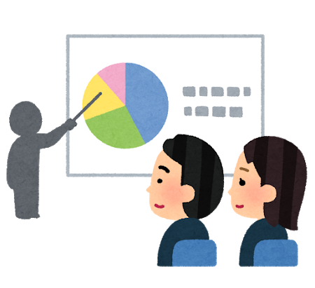

システム開発＋マーケティング
グロースハック（Growth hack）とは会社や製品、サービスをグロース（Growth）させるという意味です。
例えばあるサービスを開発した時、そのユーザーからそのサービスに関する情報を得て、サービスの内容を改善するというものがあります。
私たちの周りにある多くの製品やサービスは様々なユーザーのニーズに応え、ユーザー数を増やしていくことで価値を高めていきます。
そのためには利用者の製品、サービスに対する動向を把握し分析する必要があります。
その時に重要となるのがマーケティング戦略です。
一方で、マーケティング戦略を立て、新規のユーザーを増やしていくだけでは、その製品やサービスを成長させるのに十分ではありません。
既存のユーザーを維持、定着させることによってサービスや製品を展開し、拡散していくことも必要です。
その役割を担うのがグロースハッカーと呼ばれる人々です。
つまり製品やサービスを修正、改善していく開発者（Developer）としての側面と、ユーザー獲得のための分析や仕組みを考えるマーケティングの側面と併せ持ったのがグロースハックです。

グロースハックの歴史
グロースハックは2010年にアメリカの起業家ショーン・エリスが提唱したとされています。
"A growth hacker is a person whose true north is growth. Everything they do is scrutinized by its potential impact on scalable growth."
（引用：SETUP MARKETING "Find a Growth Hacker for Your Startup"）
このようにグロースハックがサービスの成長を目的としたものであり、その目的のために行動する人がグロースハッカーであると定義されます。
その後、2012年のアメリカ大統領選挙の際に共和党のミット・ロムニー陣営は、グロースハッカーのアーロン・ジーンを陣営に招集しました。
ジーンは、徹底したABテストを敢行し、バナーのサイズ、位置、色などを、繰り返し微調整し、有権者にとって好感度の高いウェブサイトデザインを追求しました。
その結果、1億8000万ドルもの政治献金を集めることに成功しました。
この事がきっかけでグロースハッカーが注目されるようになりました。
（ABテスト：ある特定の期間にページの一部分を2パターン用意して、どちらがより効果の高い成果を出せるのかを検証すること）
グロースハックのフレームワーク（Webサイトの例）
Acquisition（ユーザー獲得）
Acquisitionのフェーズでは、新規のユーザー獲得を行います。
新しく立ち上げたばかりのWEBサイトを多くの人に認知してもらい、実際に訪問してもらうことがこのフェーズの目的です。
サイトの訪問客数やサインアップ数などを指標として用います。
Activation（利用）
Activationのフェーズでは利用開始を意味し、より多くのユーザーに利用してもらうための施策を考えます。
WEBサイトを訪問するだけでなく、実際にサービスを利用してもらうことを目標とします。
トライアルキャンセルユーザー数や継続トライアルユーザー数、さらに主要機能を会員登録後一定期間内に一定回数以上利用しているかなどを指標として用います。
Retention（継続）
Retentionのフェーズでは、Activationで獲得したユーザーに一定期間を過ぎても継続して利用してもらうための施策を考えます。
機能利用率、有料会員数、再訪ユーザー数などを指標とし、メールマガジンやプッシュ通知機能などを実装してRetentionを向上させる取り込みを行います。
Referral（紹介）
Referralのフェーズでは紹介を意味し、すでにサービスを利用しているユーザーに新規のユーザーに対してサービスを紹介してもらうよう誘導します。
ユーザーは、自らが気に入ったサービスでなければ他者に紹介することはありません。
このため、このフェーズではユーザーに「紹介したい」と思わせる仕掛けや実際に紹介する際のやりやすさが指標となります。
Revenue（収益化）
最後のフェーズであるRevenueは、収益化・売上を伸ばすことを意味します。
発生した収益のうち、ユーザーあたりの獲得収益、1サービスあたりの獲得収益などを指標とします。
各ステップごとに指標を定め、改善していくことで、最終段階である「収益化」につなげ、売上を伸ばしていきます。
Acquisition
Activation
Retention
Referral
Revenue
仮説構築スキル
得られたデータから有効な仮説を導き出すスキルです。
情報収集・分析スキル
コホート分析やファネル分析といった情報を集め、それらを科学的に分析するスキルです。
施策実行スキル
施策を実行するためのデザインやプログラミングに関するスキルです。